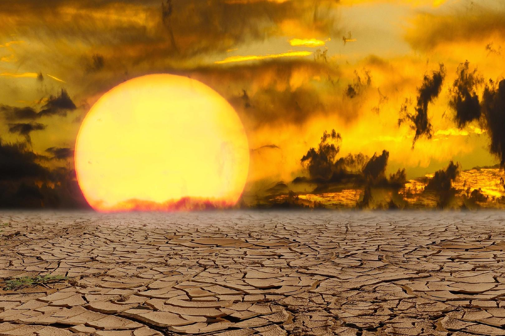
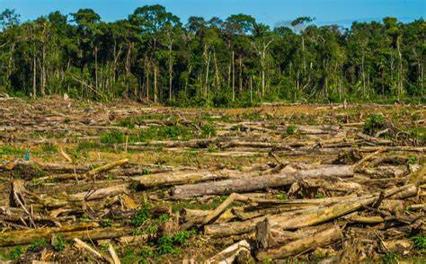
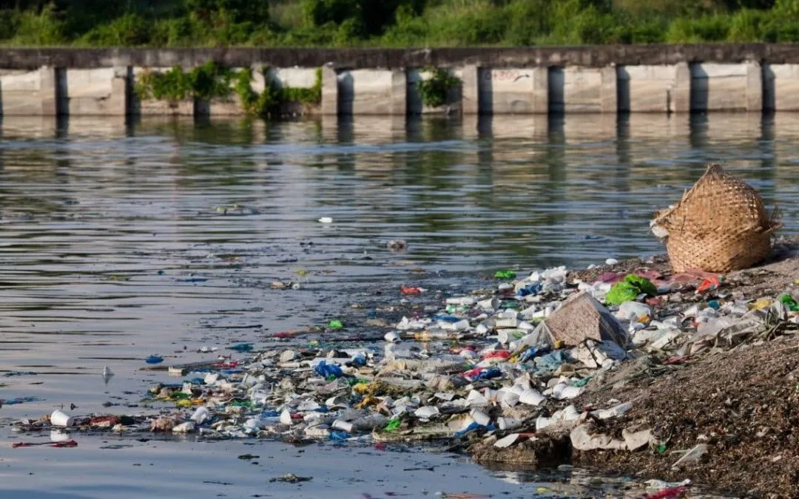

En esta sección, exploraremos algunos de los problemas ambientales más críticos que afectan a nuestro planeta hoy en día. Comprender estos problemas es el primer paso para tomar medidas efectivas para mitigarlos.
El cambio climático se refiere al aumento de las temperaturas globales debido al aumento de gases de efecto invernadero como el dióxido de carbono. Esto provoca fenómenos meteorológicos extremos, aumento del nivel del mar y alteraciones en los ecosistemas.
La deforestación implica la eliminación de grandes áreas de bosques para dar paso a la agricultura, la ganadería o la urbanización. Esto lleva a la pérdida de biodiversidad, altera los ciclos del agua y contribuye al cambio climático.
La contaminación del agua ocurre cuando sustancias químicas, desechos y contaminantes entran en ríos, lagos y océanos, afectando la vida acuática y la salud humana. Las causas incluyen vertidos industriales, desechos agrícolas y aguas residuales.
Aquí hay algunas formas en las que podemos trabajar juntos para abordar estos problemas: